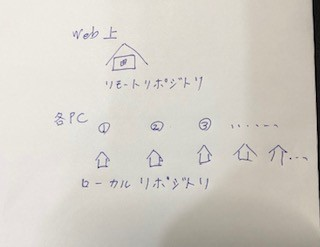
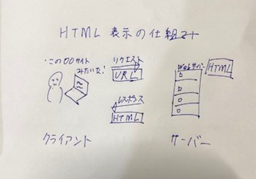

GIT,HTMLについて
1.GIT
GITとはファイルのバージョン管理が簡単にできるツールです。
難しく言うと分散型バージョン管理システムです。
バージョンとは簡単に言うとファイルの更新履歴のことです。
誰が何を書き込み、削除したのか、どう変わったのかを履歴と
して残しておき、いつでも確認したり、バージョンを戻すこと
が可能です。
リポジトリ
GITを知るためにリポジトリという言葉は必須です。
リポジトリとはファイルや履歴を保存するためのストレージの
ことです。簡単に言うと保管庫です。リポジトリには二つあり
リモートリポジトリとローカルリポジトリです。

基本アクション
GITにおける基本アクションはADD,COMMIT,PULL,PUSHの4つです。
ADDとは編集したことをindexに登録する作業です。履歴を残す前
の準備みたいなものです。
COMMITとはADDを行った後、自分のローカルリポジトリに作業内容
の履歴を保存する作業のことです
PULLとは共有しているリモートリポジトリに保存されているファイ
ルを、自分のローカルリポジトリに存在しないファイルや、他のユ
ーザーが更新したファイルのみをダウンロードする機能です
PUSHとはローカルリポジトリにあるファイルをリモートリポ
ジトリにアップして保存する作業のことです。
参考サイト
(初心者向け)GITとは何か？GITの概念を解説
2.HTML
HTMLとはHyper Text Markup Languageの略称で、コンピュータが
理解できる形で書かれた言語のことです。よく耳にするプログラミ
ング言語とは違い、文字に目印やリンクをつけるためのマークアッ
プ言語のことです。
HTMLの仕組み

上の図の通り、見たいWebサイトのURLをクリックするとサイト表示
のリクエストがサーバーに送られます。レスポンスとしてサーバー側
で保管をしている該当のHTMLファイルをクライアントへと返します。
そうすることでwebサイトが閲覧できます。